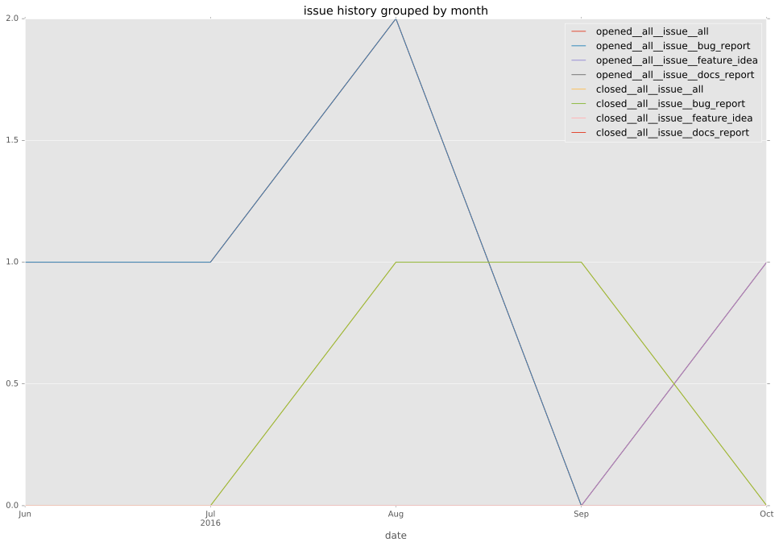
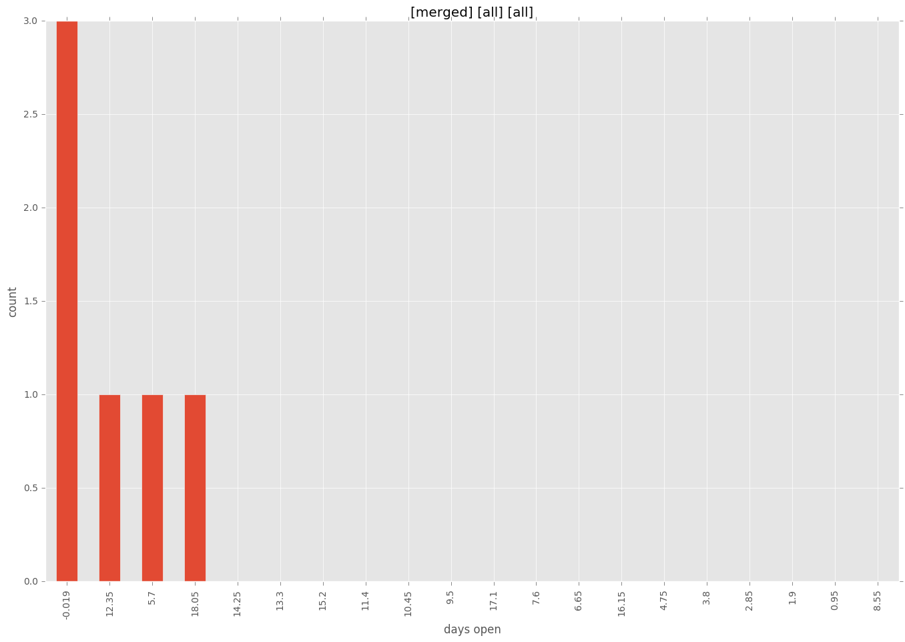
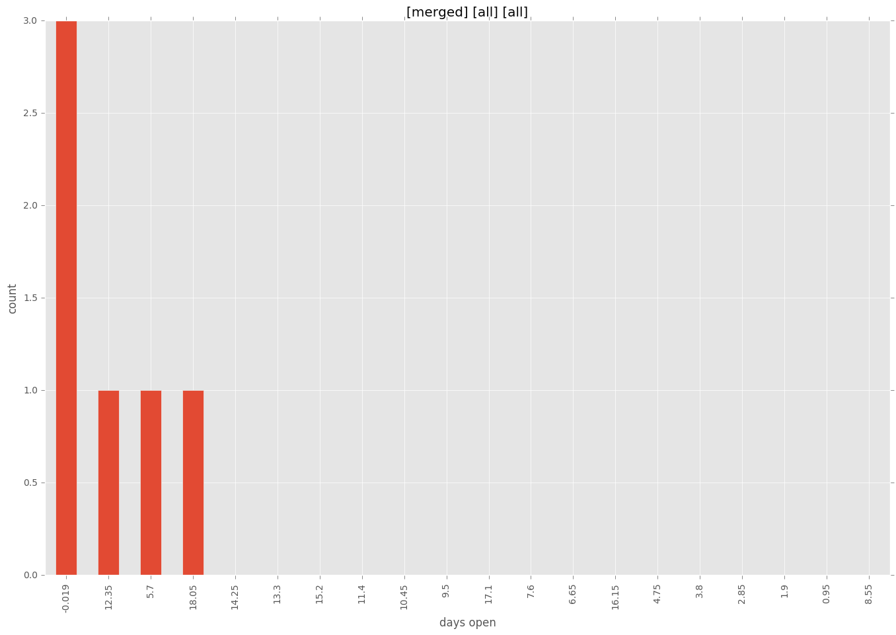

authors
- chouseknecht
- nitzmahone
maintainers
- ansible
contributors
- chouseknecht : 124 commits
- h-hirokawa : 2 commits
- bcoca : 27 commits
- pmarques : 1 commits
- gundalow : 6 commits
total issue counts
feature pull request: 1
pullrequest: 11
docs pull request: 1
bugfix pull request: 6
feature idea: 1
issue: 5
new plugin: 3
bug report: 4
issue history

pullrequest history
days open by issue type
bugfix pull request
count: 9
std: 7.47402910826
min: 0
max: 18
median: 0.0
mean: 4.88888888889
all
count: 17
std: 10.4276216904
min: 0
max: 36
median: 6.0
mean: 8.88235294118
pullrequest
count: 0
std: nan
min: nan
max: nan
median: nan
mean: nan
docs pull request
count: 2
std: 0.0
min: 19
max: 19
median: 19.0
mean: 19.0
feature pull request
count: 0
std: nan
min: nan
max: nan
median: nan
mean: nan
feature idea
count: 0
std: nan
min: nan
max: nan
median: nan
mean: nan
issue
count: 0
std: nan
min: nan
max: nan
median: nan
mean: nan
new plugin
count: 4
std: 2.62995563968
min: 1
max: 6
median: 4.0
mean: 3.75
bug report
count: 2
std: 12.7279220614
min: 18
max: 36
median: 27.0
mean: 27.0
closures grouped by total days open
 
